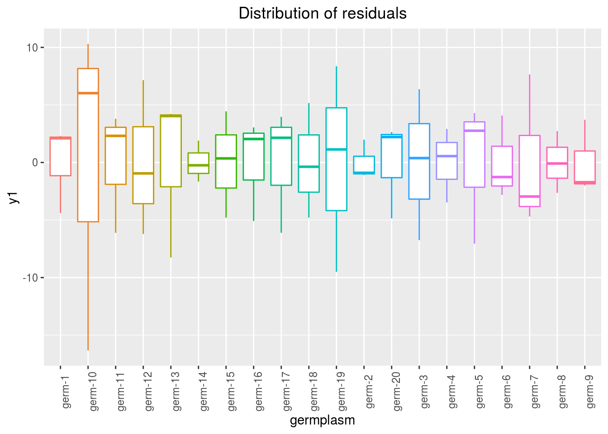
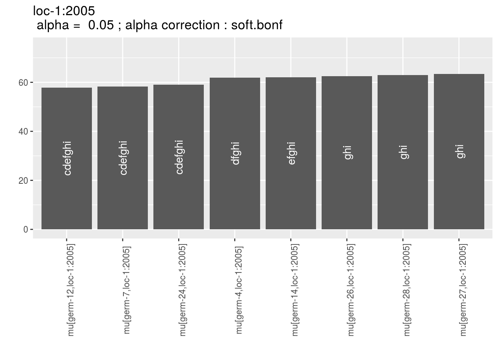
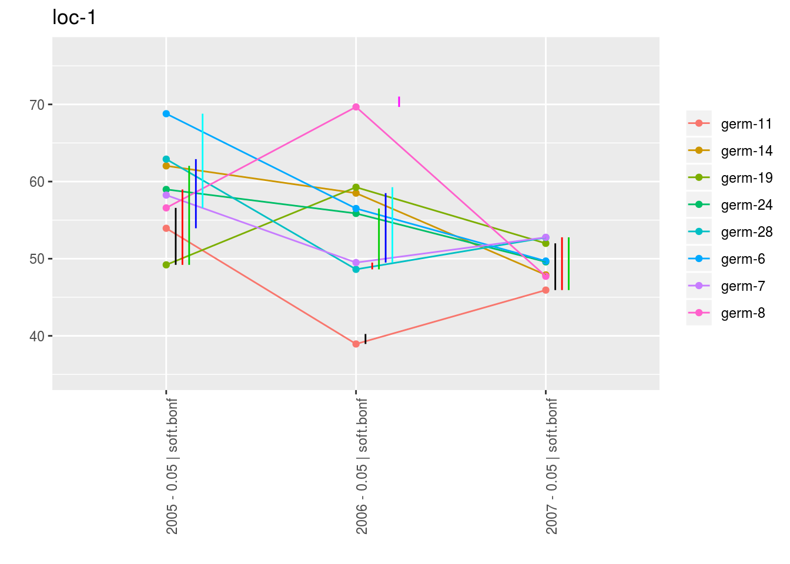
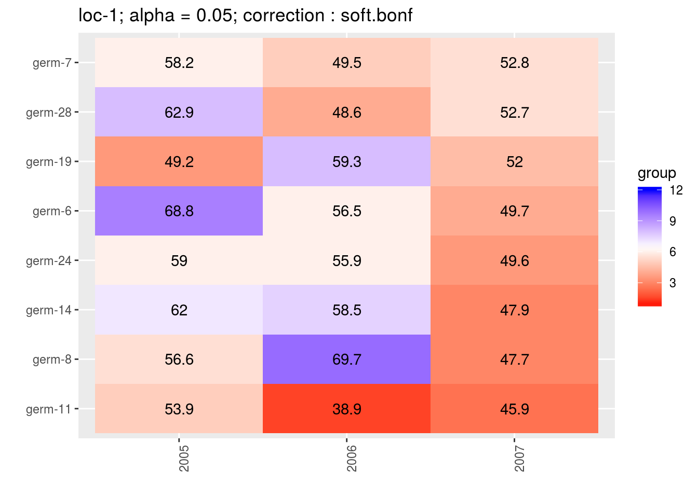

3.5 Family 1 of analysis : Compare different varieties evaluated for selection in different locations.
Family 1 gathers analyses that estimate entry effects. It allows to compare different entries on each location and test for significant differences among entries. Specific analysis including response to selection can also be done. The objective to compare different germplasms on each location for selection.
3.5.1 Decision tree
To compare different germplasms on each location for selection, different scenarios are possible (Figure 3.22) :
- classic anova (M4a, section 3.5.3) based on on fully replicated designs (D1, section 3.2.1),
- spatial analysis (M4b, section 3.5.4) based on row-column designs (D3, section 3.2.3),
- mixed models (M5, section3.5.5) for incomplete blocks designs (D2, section 3.2.2),
- bayesian hierarchical model intra-location (M7a, section 3.5.6) based on satellite-regional farms designs (D4, section 3.2.4).
It can be completed by organoleptic analysis (section 4). Based on these analysis, specific objective including response to selection analysis can also be done.

Figure 3.22: Decision tree with experimental constraints, designs and methods of agronomic analysis carry out in PPBstats regarding the objective : Compare different varieties evaluated for selection in different locations. D refers to designs and M to methods.
3.5.2 Workflow and function relations in PPBstats regarding family 1 of analysis
Figure 3.23 displays the functions and their relationships. Table 3.2 describes each of the main functions.
You can have more information for each function by typing ?function_name in your R session.
Note that check_model(), mean_comparison() and plot() are S3 method.
Therefore, you should type ?check_model, ?mean_comparison or ?plot.PPBstats to have general features and then see in details for specific functions.

Figure 3.23: Main functions used in the workflow of family 1.
| function name | description |
|---|---|
design_experiment |
Provides experimental design for the different situations corresponding to the choosen family of analysis |
format_data_PPBstats |
Check and format the data to be used in PPBstats functions |
model_bh_intra-location |
Run Hierarchical Bayesian intra-location model |
model_spatial |
Run spatial row and column model |
model_anova |
Run classic anova model |
check_model |
Check if the model went well |
mean_comparisons |
Get mean comparisons |
plot |
Build ggplot objects to visualize output |
3.5.3 Classic ANOVA (M4a)
3.5.3.1 Theory of the model
The experimental design used is fully replicated (D1) on one location. The model is based on frequentist statistics (section 3.1.2.1). The tests to check the model are explained in section 3.1.2.1.2. The method to compute mean comparison are explained in section 3.1.2.1.3. The analysis is done the following model :
\(Y_{ijk} = \mu + \alpha_{i} + rep_{k} + \varepsilon_{ijk}; \quad \varepsilon_{ijk} \sim \mathcal{N} (0,\sigma^2)\)
With,
- \(Y_{ijk}\) the phenotypic value for replication \(k\), germplasm \(i\) and individual \(j\),
- \(\mu\) the general mean,
- \(\alpha_{i}\) the effect of germplasm \(i\),
- \(rep_{k}\) the effect of the replication \(k\),
- \(\varepsilon_{ijk}\) the residuals.
3.5.3.2 Steps with PPBstats
For classic anova analysis, you can follow these steps (Figure 3.2):
- Format the data with
format_data_PPBstats() - Run the model with
model_anova - Check model outputs to know if you can continue the analysis with
check_model()and vizualise it withplot() - Get mean comparisons for each factor with
mean_comparisons()and vizualise it withplot()
3.5.3.3 Format the data
A subset of data_model_GxE is used in this exemple.
data(data_model_GxE)
data_model_anova = droplevels(dplyr::filter(data_model_GxE, location == "loc-1"))
data_model_anova = format_data_PPBstats(data_model_anova, type = "data_agro")## data has been formated for PPBstats functions.head(data_model_anova)## seed_lot location long lat year germplasm block
## 1 germ-12_loc-1_2005_0001 loc-1 0.616363 44.20314 2005 germ-12 1
## 2 germ-1_loc-1_2005_0001 loc-1 0.616363 44.20314 2005 germ-1 1
## 3 germ-18_loc-1_2005_0001 loc-1 0.616363 44.20314 2005 germ-18 1
## 4 germ-14_loc-1_2005_0001 loc-1 0.616363 44.20314 2005 germ-14 1
## 5 germ-6_loc-1_2005_0001 loc-1 0.616363 44.20314 2005 germ-6 1
## 6 germ-4_loc-1_2005_0001 loc-1 0.616363 44.20314 2005 germ-4 1
## X Y y1 y1$date y2 y2$date y3 y3$date desease
## 1 A 1 14.32724 2017-07-15 41.85377 2017-07-15 66.05498 2017-07-15 low
## 2 A 2 23.03428 2017-07-15 37.38970 2017-07-15 63.39528 2017-07-15 low
## 3 A 3 24.91349 2017-07-15 38.38628 2017-07-15 60.52710 2017-07-15 high
## 4 A 4 24.99078 2017-07-15 39.72205 2017-07-15 60.80393 2017-07-15 low
## 5 A 5 18.95340 2017-07-15 46.60443 2017-07-15 53.71210 2017-07-15 high
## 6 B 1 21.31660 2017-07-15 49.94656 2017-07-15 60.71978 2017-07-15 medium
## vigor y1$date_julian y2$date_julian y3$date_julian
## 1 l 195 195 195
## 2 l 195 195 195
## 3 h 195 195 195
## 4 l 195 195 195
## 5 m 195 195 195
## 6 l 195 195 1953.5.3.4 Run the model
To run model on the dataset, used the function model_anova.
You can run it on one variable.
out_anova = model_anova(data_model_anova, variable = "y1")out_anova is a list containing two elements :
info: a list with variable
out_anova$info## $variable
## [1] "y1"ANOVAa list with two elements :model
out_anova$ANOVA$model## ## Call: ## stats::lm(formula = variable ~ germplasm + block, data = data) ## ## Coefficients: ## (Intercept) germplasm1 germplasm2 germplasm3 germplasm4 ## 20.26702 1.60183 0.02397 -0.39822 1.21183 ## germplasm5 germplasm6 germplasm7 germplasm8 germplasm9 ## 1.06590 3.76010 -5.10761 -0.92696 2.63546 ## germplasm10 germplasm11 germplasm12 germplasm13 germplasm14 ## 0.42415 1.56248 -5.76240 -4.62059 0.47600 ## germplasm15 germplasm16 germplasm17 germplasm18 germplasm19 ## 1.43492 -1.55346 0.89022 0.39441 1.16307 ## block1 block2 ## -0.93928 -0.22936anova_model
out_anova$ANOVA$anova_model## Analysis of Variance Table ## ## Response: variable ## Df Sum Sq Mean Sq F value Pr(>F) ## germplasm 19 361.54 19.028 0.5090 0.9414 ## block 2 46.01 23.006 0.6154 0.5457 ## Residuals 38 1420.67 37.386germplasm_effectsa list of two elements :effects
out_anova$ANOVA$germplasm_effects$effects## germ-1 germ-10 germ-11 germ-12 germ-13 germ-14 ## 1.60183489 0.02396579 -0.39821799 1.21183407 1.06590372 3.76009917 ## germ-15 germ-16 germ-17 germ-18 germ-19 germ-2 ## -5.10761419 -0.92695642 2.63546203 0.42415203 1.56247594 -5.76239571 ## germ-20 germ-3 germ-4 germ-5 germ-6 germ-7 ## -4.62059183 0.47600360 1.43491926 -1.55346262 0.89022028 0.39441135 ## germ-8 germ-9 ## 1.16306897 1.72488766intra_variance
out_anova$ANOVA$germplasm_effects$intra_variance## germ-1 germ-10 germ-11 germ-12 germ-13 germ-14 ## 14.550965 204.517046 28.558887 45.376513 51.105885 3.216895 ## germ-15 germ-16 germ-17 germ-18 germ-19 germ-2 ## 21.434155 19.650429 28.827606 24.862755 80.733922 2.938909 ## germ-20 germ-3 germ-4 germ-5 germ-6 germ-7 ## 17.722408 43.102002 10.437349 37.931023 13.113586 44.667769 ## germ-8 germ-9 ## 7.226053 10.361250
3.5.3.5 Check and visualize model outputs
The tests to check the model are explained in section 3.1.2.1.2.
3.5.3.5.1 Check the model
Once the model is run, it is necessary to check if the outputs can be taken with confidence.
This step is needed before going ahead in the analysis (in fact, object used in the next functions must come from check_model()).
out_check_anova = check_model(out_anova)out_check_anova is a list containing four elements :
info: a list with variablemodel_anovathe output from the modeldata_ggplota list containing information for ggplot:data_ggplot_residualsa list containing :data_ggplot_normalitydata_ggplot_skewness_testdata_ggplot_kurtosis_testdata_ggplot_qqplot
data_ggplot_variability_repartition_piedata_ggplot_var_intra
3.5.3.5.2 Visualize outputs
Once the computation is done, you can visualize the results with plot()
p_out_check_anova = plot(out_check_anova)p_out_check_anova is a list with:
residualshistogram: histogram with the distribution of the residuals
p_out_check_anova$residuals$histogram## `stat_bin()` using `bins = 30`. Pick better value with `binwidth`.qqplot
p_out_check_anova$residuals$qqplot
variability_repartition: pie with repartition of SumSq for each factor
p_out_check_anova$variability_repartitionvariance_intra_germplasm: repartition of the residuals for each germplasm (see Details for more information) With the hypothesis than the micro-environmental variation is equaly distributed on all the individuals (i.e. all the plants), the distribution of each germplasm represent the intra-germplasm variance. This has to been seen with caution:- If germplasm have no intra-germplasm variance (i.e. pure line or hybrides) then the distribution of each germplasm represent only the micro-environmental variation.
- If germplasm have intra-germplasm variance (i.e. population such as landraces for example) then the distribution of each germplasm represent the micro-environmental variation plus the intra-germplasm variance.
p_out_check_anova$variance_intra_germplasm
3.5.3.6 Get and visualize mean comparisons
The method to compute mean comparison are explained in section 3.1.2.1.3.
3.5.3.6.1 Get mean comparisons
Get mean comparisons with mean_comparisons().
out_mean_comparisons_anova = mean_comparisons(out_check_anova, p.adj = "bonferroni")out_mean_comparisons_anova is a list of two elements:
info: a list with variabledata_ggplot_LSDbarplot_germplasm
3.5.3.6.2 Visualize mean comparisons
p_out_mean_comparisons_anova = plot(out_mean_comparisons_anova)p_out_mean_comparisons_anova is a list of one element with barplots :
For each element of the list, there are as many graph as needed with nb_parameters_per_plot parameters per graph.
Letters are displayed on each bar. Parameters that do not share the same letters are different regarding type I error (alpha) and alpha correction.
The error I (alpha) and the alpha correction are displayed in the title.
germplasm: mean comparison for germplasm
pg = p_out_mean_comparisons_anova$germplasm
names(pg)## [1] "1" "2" "3"pg$`1`3.5.4 Spatial analysis (M4b)
3.5.4.1 Theory of the model
The experimental design used is the row-column design (D3). The following model is based on frequentist statistics (section 3.1.2.1). The model allows taking into account environmental variation within a block with few control replicated in rows and columns.
It is based on a SpATS (Spatial Analysis of Field Trials with Splines) model proposed by Rodrı'guez-Álvarez et al. (2016) :
\(Y_{ijk} = \alpha_{i} + r_{j} + c_{k} + f(u,v) + \varepsilon_{ijk}; \quad \varepsilon_{ijk} \sim \mathcal{N} (0,\sigma^2)\)
With,
- \(Y_{ijk}\) the phenotypic value for germplasm \(i\), row \(j\) and column \(k\)
- \(\alpha_{i}\) the random effect of germplasm \(i\)
- \(r_{j}\) the effect of row \(j\)
- \(c_{k}\) the effect of col \(k\)
- \(f(u,v)\) the smooth bivariate function that simultaneously accounts for the spatial trend across both directions of the fiel (i.e. rows and columns)
- \(\varepsilon_{ijk}\) the residuals
Note that \(f(u,v)\) is divided into 8 components excluding the intercept (Rodrı'guez-Álvarez et al. 2016):
- the linear effect of the rows (row),
- the linear effect of the columns (col),
- the linear interaction of rows and columns (row:col),
- the main row effect (f(row)),
- the main column effect (f(col)),
- the smooth varying coefficient term regarding rows (f(col):row),
- the smooth varying coefficient term regarding columns (row:f(col))),
- the smooth-by-smooth interaction component (f(col):f(row))
Much more information regarding the model as well as example of R package SpATS can be found in Rodrı'guez-Álvarez et al. (2016).
3.5.4.2 Steps with PPBstats
- Format the data with
format_data_PPBstats() - Run the model with
model_spatial() - Check model outputs with graphs to know if you can continue the analysis with
check_model()and vizualise it withplot() - Get mean comparisons for germplasms with
mean_comparisons()and vizualise it withplot()
3.5.4.3 Format the data
data("data_model_spatial")
data_model_spatial = format_data_PPBstats(data_model_spatial, type = "data_agro")## Warning in format_data_PPBstats.data_agro(data): Column "long" is needed to
## get map and not present in data.## Warning in format_data_PPBstats.data_agro(data): Column "lat" is needed to
## get map and not present in data.## data has been formated for PPBstats functions.3.5.4.4 Run the model
By default, germplasm are settled as random.
out_spatial = model_spatial(data = data_model_spatial, variable = "y1")## Effective dimensions
## -------------------------
## It. Deviance germplasm col_f row_f f(col) f(row) f(col):row col:f(row)f(col):f(row)
## 1 32230.908352 77.713 0.721 0.358 11.835 0.260 10.118 0.259 5.122
## 2 1381.145352 78.477 0.842 0.688 8.927 0.162 7.951 0.300 5.322
## 3 1372.535535 79.099 0.960 0.978 6.672 0.076 6.337 0.322 5.415
## 4 1366.744421 79.500 1.074 1.125 4.901 0.028 5.204 0.322 5.489
## 5 1363.081900 79.535 1.181 1.172 3.519 0.009 4.528 0.301 5.636
## 6 1360.738664 79.195 1.281 1.182 2.449 0.003 4.155 0.269 5.922
## 7 1359.521819 78.552 1.374 1.182 1.701 0.001 3.934 0.235 6.325
## 8 1359.207730 77.656 1.457 1.181 1.397 0.000 3.769 0.206 6.764
## 9 1359.079764 76.642 1.536 1.180 1.327 0.000 3.621 0.183 7.188
## 10 1358.974057 75.611 1.617 1.178 1.304 0.000 3.485 0.164 7.578
## 11 1358.878185 74.585 1.701 1.175 1.290 0.000 3.356 0.147 7.934
## 12 1358.787396 73.571 1.787 1.171 1.278 0.000 3.228 0.132 8.256
## 13 1358.697592 72.570 1.875 1.168 1.268 0.000 3.098 0.119 8.547
## 14 1358.604502 71.580 1.965 1.165 1.258 0.000 2.960 0.107 8.810
## 15 1358.503034 70.600 2.057 1.161 1.249 0.000 2.813 0.096 9.051
## 16 1358.386490 69.626 2.151 1.158 1.240 0.000 2.649 0.087 9.272
## 17 1358.245521 68.654 2.246 1.155 1.231 0.000 2.464 0.078 9.478
## 18 1358.066927 67.679 2.343 1.151 1.223 0.000 2.252 0.070 9.672
## 19 1357.832952 66.698 2.440 1.147 1.215 0.000 2.004 0.063 9.859
## 20 1357.522974 65.703 2.536 1.143 1.208 0.000 1.715 0.056 10.042
## 21 1357.121302 64.692 2.632 1.139 1.202 0.000 1.379 0.050 10.220
## 22 1356.636368 63.663 2.725 1.136 1.198 0.000 0.999 0.044 10.392
## 23 1356.137281 62.621 2.817 1.134 1.195 0.000 0.592 0.039 10.551
## 24 1355.764187 61.561 2.910 1.133 1.192 0.000 0.249 0.035 10.684
## 25 1355.579891 60.477 3.005 1.133 1.188 0.000 0.074 0.031 10.776
## 26 1355.502334 59.399 3.103 1.134 1.185 0.000 0.018 0.028 10.840
## 27 1355.460151 58.356 3.203 1.134 1.182 0.000 0.004 0.025 10.889
## 28 1355.428453 57.354 3.304 1.134 1.179 0.000 0.001 0.022 10.929
## 29 1355.400641 56.393 3.406 1.134 1.177 0.000 0.000 0.020 10.962
## 30 1355.374996 55.469 3.509 1.134 1.175 0.000 0.000 0.018 10.990
## 31 1355.350988 54.579 3.613 1.134 1.174 0.000 0.000 0.016 11.013
## 32 1355.328384 53.722 3.716 1.134 1.172 0.000 0.000 0.015 11.032
## 33 1355.307038 52.894 3.820 1.134 1.170 0.000 0.000 0.013 11.047
## 34 1355.286835 52.094 3.924 1.134 1.169 0.000 0.000 0.012 11.059
## 35 1355.267678 51.319 4.027 1.134 1.168 0.000 0.000 0.011 11.069
## 36 1355.249485 50.569 4.129 1.133 1.166 0.000 0.000 0.010 11.077
## 37 1355.232183 49.841 4.231 1.133 1.165 0.000 0.000 0.009 11.083
## 38 1355.215708 49.134 4.331 1.133 1.164 0.000 0.000 0.008 11.087
## 39 1355.200003 48.448 4.431 1.133 1.162 0.000 0.000 0.008 11.090
## 40 1355.185015 47.779 4.529 1.133 1.161 0.000 0.000 0.007 11.092
## 41 1355.170700 47.129 4.625 1.133 1.160 0.000 0.000 0.006 11.093
## 42 1355.157014 46.495 4.719 1.133 1.159 0.000 0.000 0.006 11.093
## 43 1355.143919 45.877 4.812 1.133 1.158 0.000 0.000 0.005 11.093
## 44 1355.131378 45.275 4.902 1.133 1.157 0.000 0.000 0.005 11.092
## 45 1355.119359 44.686 4.990 1.133 1.156 0.000 0.000 0.005 11.090
## 46 1355.107831 44.111 5.077 1.133 1.155 0.000 0.000 0.004 11.088
## 47 1355.096764 43.549 5.160 1.133 1.154 0.000 0.000 0.004 11.086
## 48 1355.086132 43.000 5.242 1.133 1.153 0.000 0.000 0.004 11.084
## 49 1355.075909 42.462 5.320 1.133 1.152 0.000 0.000 0.003 11.081
## 50 1355.066070 41.936 5.397 1.133 1.151 0.000 0.000 0.003 11.078
## 51 1355.056594 41.420 5.471 1.133 1.151 0.000 0.000 0.003 11.075
## 52 1355.047459 40.915 5.542 1.133 1.150 0.000 0.000 0.003 11.072
## 53 1355.038645 40.419 5.611 1.133 1.149 0.000 0.000 0.003 11.069
## 54 1355.030133 39.933 5.677 1.133 1.148 0.000 0.000 0.002 11.066
## 55 1355.021905 39.457 5.741 1.133 1.148 0.000 0.000 0.002 11.063
## 56 1355.013944 38.989 5.803 1.133 1.147 0.000 0.000 0.002 11.060
## 57 1355.006234 38.529 5.862 1.132 1.146 0.000 0.000 0.002 11.057
## 58 1354.998761 38.078 5.919 1.132 1.146 0.000 0.000 0.002 11.054
## 59 1354.991511 37.634 5.974 1.132 1.145 0.000 0.000 0.002 11.051
## 60 1354.984470 37.198 6.026 1.132 1.145 0.000 0.000 0.002 11.048
## 61 1354.977626 36.769 6.076 1.132 1.144 0.000 0.000 0.001 11.045
## 62 1354.970968 36.347 6.124 1.132 1.143 0.000 0.000 0.001 11.042
## 63 1354.964484 35.931 6.170 1.132 1.143 0.000 0.000 0.001 11.040
## 64 1354.958165 35.522 6.215 1.132 1.143 0.000 0.000 0.001 11.037
## 65 1354.952001 35.120 6.257 1.132 1.142 0.000 0.000 0.001 11.034
## 66 1354.945982 34.723 6.297 1.132 1.142 0.000 0.000 0.001 11.032
## 67 1354.940102 34.332 6.336 1.132 1.141 0.000 0.000 0.001 11.029
## 68 1354.934351 33.946 6.373 1.132 1.141 0.000 0.000 0.001 11.027
## 69 1354.928723 33.566 6.409 1.132 1.140 0.000 0.000 0.001 11.024
## 70 1354.923210 33.192 6.443 1.132 1.140 0.000 0.000 0.001 11.022
## 71 1354.917807 32.822 6.476 1.132 1.140 0.000 0.000 0.001 11.020
## 72 1354.912506 32.457 6.507 1.132 1.139 0.000 0.000 0.001 11.018
## 73 1354.907303 32.096 6.537 1.132 1.139 0.000 0.000 0.001 11.015
## 74 1354.902193 31.740 6.566 1.132 1.139 0.000 0.000 0.001 11.013
## 75 1354.897169 31.389 6.593 1.132 1.138 0.000 0.000 0.001 11.011
## 76 1354.892228 31.042 6.619 1.132 1.138 0.000 0.000 0.001 11.009
## 77 1354.887365 30.698 6.645 1.132 1.138 0.000 0.000 0.001 11.008
## 78 1354.882575 30.359 6.669 1.132 1.138 0.000 0.000 0.001 11.006
## 79 1354.877856 30.024 6.692 1.132 1.137 0.000 0.000 0.000 11.004
## 80 1354.873202 29.692 6.715 1.132 1.137 0.000 0.000 0.000 11.002
## 81 1354.868612 29.364 6.736 1.131 1.137 0.000 0.000 0.000 11.000
## 82 1354.864081 29.039 6.757 1.131 1.137 0.000 0.000 0.000 10.999
## 83 1354.859606 28.718 6.777 1.131 1.137 0.000 0.000 0.000 10.997
## 84 1354.855184 28.400 6.796 1.131 1.136 0.000 0.000 0.000 10.995
## 85 1354.850813 28.085 6.814 1.131 1.136 0.000 0.000 0.000 10.994
## 86 1354.846490 27.774 6.832 1.131 1.136 0.000 0.000 0.000 10.992
## 87 1354.842212 27.465 6.849 1.131 1.136 0.000 0.000 0.000 10.991
## 88 1354.837977 27.159 6.866 1.131 1.136 0.000 0.000 0.000 10.989
## 89 1354.833783 26.856 6.882 1.131 1.135 0.000 0.000 0.000 10.988
## 90 1354.829627 26.556 6.897 1.131 1.135 0.000 0.000 0.000 10.986
## 91 1354.825508 26.258 6.912 1.131 1.135 0.000 0.000 0.000 10.985
## 92 1354.821423 25.963 6.927 1.131 1.135 0.000 0.000 0.000 10.984
## 93 1354.817371 25.671 6.941 1.131 1.135 0.000 0.000 0.000 10.982
## 94 1354.813349 25.381 6.954 1.131 1.135 0.000 0.000 0.000 10.981
## 95 1354.809357 25.093 6.967 1.131 1.135 0.000 0.000 0.000 10.979
## 96 1354.805391 24.808 6.980 1.131 1.135 0.000 0.000 0.000 10.978
## 97 1354.801452 24.525 6.992 1.131 1.134 0.000 0.000 0.000 10.977
## 98 1354.797537 24.244 7.004 1.131 1.134 0.000 0.000 0.000 10.975
## 99 1354.793645 23.965 7.016 1.131 1.134 0.000 0.000 0.000 10.974
## 100 1354.789774 23.689 7.027 1.131 1.134 0.000 0.000 0.000 10.973
## 101 1354.785923 23.414 7.038 1.131 1.134 0.000 0.000 0.000 10.971
## 102 1354.782091 23.142 7.049 1.131 1.134 0.000 0.000 0.000 10.970
## 103 1354.778277 22.871 7.059 1.131 1.134 0.000 0.000 0.000 10.969
## 104 1354.774480 22.603 7.070 1.130 1.134 0.000 0.000 0.000 10.968
## 105 1354.770697 22.336 7.080 1.130 1.134 0.000 0.000 0.000 10.966
## 106 1354.766929 22.071 7.089 1.130 1.134 0.000 0.000 0.000 10.965
## 107 1354.763175 21.808 7.099 1.130 1.134 0.000 0.000 0.000 10.964
## 108 1354.759432 21.546 7.108 1.130 1.133 0.000 0.000 0.000 10.962
## 109 1354.755701 21.287 7.117 1.130 1.133 0.000 0.000 0.000 10.961
## 110 1354.751980 21.029 7.125 1.130 1.133 0.000 0.000 0.000 10.960
## 111 1354.748268 20.773 7.134 1.130 1.133 0.000 0.000 0.000 10.958
## 112 1354.744566 20.518 7.142 1.130 1.133 0.000 0.000 0.000 10.957
## 113 1354.740871 20.265 7.150 1.130 1.133 0.000 0.000 0.000 10.956
## 114 1354.737183 20.014 7.158 1.130 1.133 0.000 0.000 0.000 10.954
## 115 1354.733501 19.764 7.166 1.130 1.133 0.000 0.000 0.000 10.953
## 116 1354.729825 19.516 7.174 1.130 1.133 0.000 0.000 0.000 10.952
## 117 1354.726154 19.269 7.181 1.130 1.133 0.000 0.000 0.000 10.950
## 118 1354.722487 19.024 7.189 1.130 1.133 0.000 0.000 0.000 10.949
## 119 1354.718824 18.780 7.196 1.130 1.133 0.000 0.000 0.000 10.948
## 120 1354.715164 18.538 7.203 1.130 1.133 0.000 0.000 0.000 10.946
## 121 1354.711506 18.297 7.209 1.130 1.133 0.000 0.000 0.000 10.945
## 122 1354.707850 18.058 7.216 1.130 1.133 0.000 0.000 0.000 10.943
## 123 1354.704196 17.820 7.223 1.130 1.133 0.000 0.000 0.000 10.942
## 124 1354.700543 17.584 7.229 1.130 1.133 0.000 0.000 0.000 10.940
## 125 1354.696890 17.349 7.235 1.130 1.133 0.000 0.000 0.000 10.939
## 126 1354.693238 17.115 7.242 1.130 1.133 0.000 0.000 0.000 10.937
## 127 1354.689585 16.883 7.248 1.129 1.133 0.000 0.000 0.000 10.936
## 128 1354.685931 16.652 7.253 1.129 1.133 0.000 0.000 0.000 10.934
## 129 1354.682277 16.422 7.259 1.129 1.133 0.000 0.000 0.000 10.933
## 130 1354.678622 16.194 7.265 1.129 1.133 0.000 0.000 0.000 10.931
## 131 1354.674964 15.967 7.270 1.129 1.133 0.000 0.000 0.000 10.930
## 132 1354.671305 15.742 7.276 1.129 1.133 0.000 0.000 0.000 10.928
## 133 1354.667645 15.518 7.281 1.129 1.133 0.000 0.000 0.000 10.927
## 134 1354.663982 15.295 7.286 1.129 1.133 0.000 0.000 0.000 10.925
## 135 1354.660316 15.074 7.291 1.129 1.133 0.000 0.000 0.000 10.923
## 136 1354.656648 14.854 7.296 1.129 1.133 0.000 0.000 0.000 10.922
## 137 1354.652978 14.636 7.301 1.129 1.133 0.000 0.000 0.000 10.920
## 138 1354.649304 14.418 7.306 1.129 1.133 0.000 0.000 0.000 10.919
## 139 1354.645629 14.203 7.310 1.129 1.133 0.000 0.000 0.000 10.917
## 140 1354.641950 13.988 7.315 1.129 1.133 0.000 0.000 0.000 10.915
## 141 1354.638268 13.775 7.319 1.129 1.133 0.000 0.000 0.000 10.913
## 142 1354.634584 13.564 7.324 1.129 1.133 0.000 0.000 0.000 10.912
## 143 1354.630898 13.353 7.328 1.129 1.133 0.000 0.000 0.000 10.910
## 144 1354.627208 13.145 7.332 1.129 1.133 0.000 0.000 0.000 10.908
## 145 1354.623517 12.937 7.336 1.129 1.133 0.000 0.000 0.000 10.906
## 146 1354.619823 12.731 7.340 1.129 1.133 0.000 0.000 0.000 10.904
## 147 1354.616127 12.527 7.344 1.129 1.133 0.000 0.000 0.000 10.903
## 148 1354.612429 12.324 7.347 1.129 1.133 0.000 0.000 0.000 10.901
## 149 1354.608730 12.122 7.351 1.129 1.133 0.000 0.000 0.000 10.899
## 150 1354.605029 11.922 7.354 1.129 1.133 0.000 0.000 0.000 10.897
## 151 1354.601327 11.724 7.358 1.128 1.133 0.000 0.000 0.000 10.895
## 152 1354.597625 11.527 7.361 1.128 1.133 0.000 0.000 0.000 10.893
## 153 1354.593922 11.331 7.364 1.128 1.133 0.000 0.000 0.000 10.891
## 154 1354.590220 11.137 7.367 1.128 1.133 0.000 0.000 0.000 10.889
## 155 1354.586518 10.945 7.371 1.128 1.134 0.000 0.000 0.000 10.887
## 156 1354.582817 10.754 7.373 1.128 1.134 0.000 0.000 0.000 10.885
## 157 1354.579118 10.564 7.376 1.128 1.134 0.000 0.000 0.000 10.883
## 158 1354.575420 10.377 7.379 1.128 1.134 0.000 0.000 0.000 10.881
## 159 1354.571725 10.191 7.382 1.128 1.134 0.000 0.000 0.000 10.879
## 160 1354.568034 10.006 7.384 1.128 1.134 0.000 0.000 0.000 10.877
## 161 1354.564346 9.823 7.387 1.128 1.134 0.000 0.000 0.000 10.875
## 162 1354.560662 9.642 7.389 1.128 1.134 0.000 0.000 0.000 10.872
## 163 1354.556984 9.463 7.392 1.128 1.134 0.000 0.000 0.000 10.870
## 164 1354.553311 9.285 7.394 1.128 1.134 0.000 0.000 0.000 10.868
## 165 1354.549644 9.109 7.396 1.128 1.134 0.000 0.000 0.000 10.866
## 166 1354.545985 8.934 7.398 1.128 1.134 0.000 0.000 0.000 10.864
## 167 1354.542334 8.762 7.400 1.128 1.134 0.000 0.000 0.000 10.862
## 168 1354.538692 8.591 7.402 1.128 1.135 0.000 0.000 0.000 10.859
## 169 1354.535059 8.422 7.404 1.128 1.135 0.000 0.000 0.000 10.857
## 170 1354.531436 8.255 7.405 1.128 1.135 0.000 0.000 0.000 10.855
## 171 1354.527825 8.090 7.407 1.128 1.135 0.000 0.000 0.000 10.852
## 172 1354.524226 7.926 7.408 1.128 1.135 0.000 0.000 0.000 10.850
## 173 1354.520639 7.764 7.410 1.128 1.135 0.000 0.000 0.000 10.848
## 174 1354.517067 7.604 7.411 1.128 1.135 0.000 0.000 0.000 10.845
## 175 1354.513509 7.446 7.413 1.127 1.135 0.000 0.000 0.000 10.843
## 176 1354.509967 7.290 7.414 1.127 1.135 0.000 0.000 0.000 10.841
## 177 1354.506442 7.136 7.415 1.127 1.135 0.000 0.000 0.000 10.838
## 178 1354.502934 6.984 7.416 1.127 1.136 0.000 0.000 0.000 10.836
## 179 1354.499445 6.834 7.417 1.127 1.136 0.000 0.000 0.000 10.834
## 180 1354.495975 6.685 7.418 1.127 1.136 0.000 0.000 0.000 10.831
## 181 1354.492525 6.539 7.419 1.127 1.136 0.000 0.000 0.000 10.829
## 182 1354.489097 6.395 7.420 1.127 1.136 0.000 0.000 0.000 10.826
## 183 1354.485691 6.252 7.420 1.127 1.136 0.000 0.000 0.000 10.824
## 184 1354.482308 6.112 7.421 1.127 1.136 0.000 0.000 0.000 10.822
## 185 1354.478950 5.973 7.422 1.127 1.136 0.000 0.000 0.000 10.819
## 186 1354.475616 5.837 7.422 1.127 1.137 0.000 0.000 0.000 10.817
## 187 1354.472309 5.703 7.423 1.127 1.137 0.000 0.000 0.000 10.814
## 188 1354.469029 5.570 7.423 1.127 1.137 0.000 0.000 0.000 10.812
## 189 1354.465776 5.440 7.423 1.127 1.137 0.000 0.000 0.000 10.809
## 190 1354.462552 5.311 7.423 1.127 1.137 0.000 0.000 0.000 10.807
## 191 1354.459358 5.185 7.424 1.127 1.137 0.000 0.000 0.000 10.805
## 192 1354.456195 5.061 7.424 1.127 1.137 0.000 0.000 0.000 10.802
## 193 1354.453062 4.939 7.424 1.127 1.137 0.000 0.000 0.000 10.800
## 194 1354.449962 4.819 7.424 1.127 1.137 0.000 0.000 0.000 10.797
## 195 1354.446895 4.700 7.424 1.127 1.138 0.000 0.000 0.000 10.795
## 196 1354.443862 4.584 7.424 1.127 1.138 0.000 0.000 0.000 10.792
## 197 1354.440863 4.470 7.424 1.127 1.138 0.000 0.000 0.000 10.790
## 198 1354.437899 4.358 7.423 1.127 1.138 0.000 0.000 0.000 10.788
## 199 1354.434971 4.248 7.423 1.127 1.138 0.000 0.000 0.000 10.785
## 200 1354.432079 4.140 7.423 1.127 1.138 0.000 0.000 0.000 10.783
## Timings:
## SpATS 22.454 seconds
## All process 23.063 seconds
##
## Spatial analysis of trials with splines
##
## Response: variable
## Genotypes (as random): germplasm
## Spatial: ~PSANOVA(col, row, nseg = c(nlevels(data_tmp$X), nlevels(data_tmp$Y)))
## Random: ~col_f + row_f
##
##
## Number of observations: 198
## Number of missing data: 13
## Effective dimension: 28.61
## Deviance: 1354.432
##
## Dimensions:
## Effective Model Nominal Ratio Type
## Intercept 1.0 1 1 1.00 F
## germplasm 4.1 184 183 0.02 R
## col_f 7.4 54 52 0.14 R
## row_f 1.1 4 2 0.56 R
## col 1.0 1 1 1.00 S
## row 1.0 1 1 1.00 S
## rowcol 1.0 1 1 1.00 S
## f(col) 1.1 55 55 0.02 S
## f(row) 0.0 5 5 0.00 S
## f(col):row 0.0 55 55 0.00 S
## col:f(row) 0.0 5 5 0.00 S
## f(col):f(row) 10.8 275 275 0.04 S
##
## Total 28.6 641 636 0.04
## Residual 169.4
## Nobs 198
##
## Type codes: F 'Fixed' R 'Random' S 'Smooth/Semiparametric'
##
##
## Spatial analysis of trials with splines
##
## Response: variable
## Genotypes (as random): germplasm
## Spatial: ~PSANOVA(col, row, nseg = c(nlevels(data_tmp$X), nlevels(data_tmp$Y)))
## Random: ~col_f + row_f
##
##
## Number of observations: 198
## Number of missing data: 13
## Effective dimension: 28.61
## Deviance: 1354.432
##
## Dimensions:
## Effective Model Nominal Ratio Type
## Intercept 1.0 1 1 1.00 F
## germplasm 4.1 184 183 0.02 R
## col_f 7.4 54 52 0.14 R
## row_f 1.1 4 2 0.56 R
## col 1.0 1 1 1.00 S
## row 1.0 1 1 1.00 S
## rowcol 1.0 1 1 1.00 S
## f(col) 1.1 55 55 0.02 S
## f(row) 0.0 5 5 0.00 S
## f(col):row 0.0 55 55 0.00 S
## col:f(row) 0.0 5 5 0.00 S
## f(col):f(row) 10.8 275 275 0.04 S
##
## Total 28.6 641 636 0.04
## Residual 169.4
## Nobs 198
##
## Type codes: F 'Fixed' R 'Random' S 'Smooth/Semiparametric'out_spatial is a list containing two elements :
info: a list with variable and data
out_spatial$info$variable## [1] "y1"head(out_spatial$info$data)## seed_lot location year germplasm block X Y y1
## 1 germ-1_loc-1_2018_0001 loc-1 2018 germ-1 1 1 1 36.20
## 2 germ-108_loc-1_2018_0001 loc-1 2018 germ-108 1 2 1 38.55
## 3 germ-119_loc-1_2018_0001 loc-1 2018 germ-119 1 3 1 38.80
## 4 germ-130_loc-1_2018_0001 loc-1 2018 germ-130 1 4 1 NA
## 5 germ-118_loc-1_2018_0001 loc-1 2018 germ-118 1 5 1 48.00
## 6 germ-120_loc-1_2018_0001 loc-1 2018 germ-120 1 6 1 78.85modela list with four elements :model
out_spatial$model$model## ## Spatial analysis of trials with splines ## ## Response: variable ## Genotypes (as random): germplasm ## Spatial: ~PSANOVA(col, row, nseg = c(nlevels(data_tmp$X), nlevels(data_tmp$Y))) ## Random: ~col_f + row_f ## ## ## Number of observations: 198 ## Number of missing data: 13 ## Effective dimension: 28.61 ## Deviance: 1354.432summary
out_spatial$model$summary## ## Spatial analysis of trials with splines ## ## Response: variable ## Genotypes (as random): germplasm ## Spatial: ~PSANOVA(col, row, nseg = c(nlevels(data_tmp$X), nlevels(data_tmp$Y))) ## Random: ~col_f + row_f ## ## ## Number of observations: 198 ## Number of missing data: 13 ## Effective dimension: 28.61 ## Deviance: 1354.432 ## ## Dimensions: ## Effective Model Nominal Ratio Type ## Intercept 1.0 1 1 1.00 F ## germplasm 4.1 184 183 0.02 R ## col_f 7.4 54 52 0.14 R ## row_f 1.1 4 2 0.56 R ## col 1.0 1 1 1.00 S ## row 1.0 1 1 1.00 S ## rowcol 1.0 1 1 1.00 S ## f(col) 1.1 55 55 0.02 S ## f(row) 0.0 5 5 0.00 S ## f(col):row 0.0 55 55 0.00 S ## col:f(row) 0.0 5 5 0.00 S ## f(col):f(row) 10.8 275 275 0.04 S ## ## Total 28.6 641 636 0.04 ## Residual 169.4 ## Nobs 198 ## ## Type codes: F 'Fixed' R 'Random' S 'Smooth/Semiparametric'var_resthe variance of the residuals
out_spatial$model$df_residual## [1] 169.4out_spatial$model$MSerror## [1] 7.995467
3.5.4.5 Check and visualize model outputs
The tests to check the model are explained in section 3.1.2.1.2.
3.5.4.5.1 Check the model
out_check_spatial = check_model(out_spatial)out_check_spatial is a list containing two elements :
spatialthe output from the modeldata_ggplota list containing information for ggplot:data_ggplot_residualsa list containing :data_ggplot_normalitydata_ggplot_skewness_testdata_ggplot_kurtosis_testdata_ggplot_qqplot
data_ggplot_variability_repartition_pie
3.5.4.5.2 Visualize outputs
Once the computation is done, you can visualize the results with plot
p_out_check_spatial = plot(out_check_spatial)p_out_check_spatial is a list with:
residualshistogram: histogram with the distribution of the residuals
p_out_check_spatial$residuals$histogram## `stat_bin()` using `bins = 30`. Pick better value with `binwidth`.qqplot
p_out_check_spatial$residuals$qqplotvariability_repartition: pie with repartition of variance for each factor
p_out_check_spatial$variability_repartition3.5.4.6 Get and visualize mean comparisons
The method to compute mean comparison are explained in section 3.1.2.1.3.
3.5.4.7 Get mean comparisons
Get mean comparisons with mean_comparisons.
out_mean_comparisons_spatial = mean_comparisons(out_check_spatial, p.adj = "bonferroni")out_mean_comparisons_spatial is a list of two elements:
info: a list with variable and datadata_ggplot_LSDbarplot_germplasm
3.5.4.8 Visualize mean comparisons
p_out_mean_comparisons_spatial = plot(out_mean_comparisons_spatial)p_out_mean_comparisons_spatial is a list of two elements
germplasm_blupwhih represent the BLUPs with their confidence intervalle
p_out_mean_comparisons_spatial$germplasm_blupgermplasm_barplot. For each element of the list, there are as many graph as needed withnb_parameters_per_plotparameters per graph. Letters are displayed on each bar. Parameters that do not share the same letters are different regarding type I error (alpha) and alpha correction. The error I (alpha) and the alpha correction are displayed in the title.
pg = p_out_mean_comparisons_spatial$germplasm_barplot
pg$`23`3.5.4.9 Apply the workflow to several variables
If you wish to apply the spatial workflow to several variables, you can use lapply with the following code :
workflow_spatial = function(x, data){
out_spatial = model_spatial(data = data, variable = x)
out_check_spatial = check_model(out_spatial)
p_out_check_spatial = plot(out_check_spatial)
out_mean_comparisons_spatial = mean_comparisons(out_check_spatial, p.adj = "bonferroni")
p_out_mean_comparisons_spatial = plot(out_mean_comparisons_spatial)
out = list(
out_spatial = out_spatial,
out_check_spatial = out_check_spatial,
p_out_check_spatial = p_out_check_spatial,
out_mean_comparisons_spatial = out_mean_comparisons_spatial,
p_out_mean_comparisons_spatial = p_out_mean_comparisons_spatial
)
return(out)
}
## Not run
# vec_variables = c("y1", "y2", "y3")
#
# out = lapply(vec_variables, workflow_spatial, data)
# names(out) = vec_variables3.5.5 Mixted model for incomplete block design (M5)
!!! TO DO !!!
The model is based on frequentist statistics (section 3.1.2.1). The tests to check the model are explained in section 3.1.2.1.2. The method to compute mean comparison are explained in section 3.1.2.1.3.
(Zystro, Colley, and Dawson 2018)
#library(ibd)
#data(ibddata)
#aov.ibd(y~factor(trt)+factor(blk),data=ibddata)
#contrast=matrix(c(1,-1,0,0,0,0,0,0,0,0,0,1,-1,0,0,0,0,0),nrow=2,byrow=TRUE)
#aov.ibd(y~factor(trt)+factor(blk),specs="trt",data=ibddata,contrast=contrast)3.5.6 Hierarchical Bayesian intra-location model to perform mean comparisons with each farm (M7a)
At the farm level, the residual has few degrees of freedom, leading to a poor estimation of the residual variance and to a lack of power for comparing populations. model_bh_intra_location was implemented to improve efficiency of mean comparisons. It is efficient with more than 20 environment (i.e. location \(\times\) year) (Rivière et al. 2015). The model is based on bayesian statistics (section 3.1.2.2).
3.5.6.1 Theory of the model
The experimental design used is satellite and regional farms (D4). The model is described in Rivière et al. (2015). We restricted ourselves to analysing values at the plot level (the values may result from the average of individual plants measures). The phenotypic value \(Y_{ijk}\) for variable \(Y\), germplasm \(i\), environment \(j\) and block \(k\) is modelled as :
\(Y_{ijk} = \mu_{ij} + \beta_{jk} + \varepsilon_{ijk} ; \quad \varepsilon_{ijk} \sim \mathcal{N} (0,\sigma^2_{j})\),
where
- \(\mu_{ij}\) is the mean of germplasm \(i\) in environment \(j\) (note that this parameter, which corresponds to an entry, confounds the population effect and the population \(\times\) environment effect);
- \(\beta_{jk}\) is the effect of block \(k\) in environment \(j\) satisfying the constraint9 \(\sum\limits_{k=1}^K \beta_{jk} = 1\) ;
- \(\varepsilon_{ijk}\) is the residual error;
- \(\mathcal{N} (0,\sigma^2_{j})\) denotes normal distribution centred on 0 with variance \(\sigma^2_{j}\), which is specific to environment \(j\).
We take advantage of the similar structure of the trials in each environment of the network to assume that trial residual variances come from a common distribution :
\(\sigma^2_{j} \sim \frac{1}{Gamma(\nu,\rho)}\),
where \(\nu\) and \(\rho\) are unknown parameters. Because of the low number of residual degrees of freedom for each farm, we use a hierarchical approach in order to assess mean differences on farm. For that, we place vague prior distributions on the hyperparameters \(\nu\) and \(\rho\) :
\(\nu \sim Uniform(\nu_{min},\nu_{max}) ; \quad \rho \sim Gamma(10^{-6},10^{-6})\).
In other words, the residual variance of a trial in a given environment is estimated using all the informations available on the network rather than using the data from that particular trial only.
The parameters \(\mu_{ij}\) and \(\beta_{jk}\) are assumed to follow vague prior distributions too:
\(\mu_{ij} \sim \mathcal{N}(\mu_{.j},10^{6}); \quad \beta_{jk} \sim \mathcal{N}(0,10^{6})\).
The inverse gamma distribution has a minimum value of 0 (consistent with the definition of a variance) and may have various shapes including asymmetric distributions. From an agronomical point of view, the assumption that trial variances are heterogeneous is consistent with organic farming: there are as many environments as farms and farmers leading to a high heterogeneity. Environment is here considered in a broad sense: practices (sowing date, sowing density, tilling, etc.), pedo climatic conditions, biotic and abiotic stress, … (Desclaux et al. 2008). Moreover, the inverse gamma distribution has conjugate properties that facilitate MCMC convergence. This model is therefore a good choice based on both agronomic and statistical criteria.
The residual variance estimated from the controls is assumed to be representative of the residual variance of the other entries. Blocks are included in the model only if the trial has blocks.
3.5.6.2 Steps with
To run model_bh_intra_location, follow these steps (Figure 3.2):
- Format the data with
format_data_PPBstats() - Run the model with
model_bh_intra_location() - Check model outputs with graphs using
check_model()to know if you can continue the analysis - Get mean comparisons for each factor with
mean_comparisons()and vizualise it withplot()
3.5.6.3 Format the data
The values for \(\mu_{ij}\), \(\beta_{jk}\), \(\epsilon_{ijk}\) and \(\sigma_j\) are the real value used to create the simulated dataset. This dataset is representative of data obtain in a PPB programme.
data(data_model_bh_intra_location)
data_model_bh_intra_location = format_data_PPBstats(data_model_bh_intra_location, type = "data_agro")## Warning in format_data_PPBstats.data_agro(data): Column "long" is needed to
## get map and not present in data.## Warning in format_data_PPBstats.data_agro(data): Column "lat" is needed to
## get map and not present in data.## data has been formated for PPBstats functions.head(data_model_bh_intra_location) # first rows of the data## seed_lot location year germplasm block X Y tkw
## 1 germ-25_loc-1_2005_0001 loc-1 2005 germ-25 1 1 a 72.09900
## 2 germ-26_loc-1_2005_0001 loc-1 2005 germ-26 1 2 b 61.05274
## 3 germ-27_loc-1_2005_0001 loc-1 2005 germ-27 1 3 c 62.99350
## 4 germ-28_loc-1_2005_0001 loc-1 2005 germ-28 1 4 d 65.10909
## 5 germ-25_loc-1_2005_0001 loc-1 2005 germ-25 2 5 e 77.01361
## 6 germ-26_loc-1_2005_0001 loc-1 2005 germ-26 2 6 f 64.10541
## tkw$date mu_ij beta_jk epsilon_ijk sigma_j tkw$date_julian
## 1 2017-07-22 73.37224 0 -1.2732421 1.622339 202
## 2 2017-07-22 61.61823 0 -0.5654918 1.622339 202
## 3 2017-07-22 64.31830 0 -1.3248006 1.622339 202
## 4 2017-07-22 62.57840 0 2.5306946 1.622339 202
## 5 2017-07-22 73.37224 0 3.6413666 1.622339 202
## 6 2017-07-22 61.61823 0 2.4871807 1.622339 2023.5.6.4 Run the model
To run model model_bh_intra_location on the dataset, used the function model_bh_intra_location().
Here it is run on thousand kernel weight (tkw).
By default, model_bh_intra_location returns posteriors for
\(\mu_{ij}\) (return.mu = TRUE),
\(\beta_{jk}\) (return.beta = TRUE),
\(\sigma_j\) (return.sigma = TRUE),
\(\nu\) (return.nu = TRUE) and
\(\rho\) (return.rho = TRUE).
You can also get \(\epsilon_{ijk}\) value with return.espilon = TRUE.
DIC criterion is a generalization of the AIC criterion that can be used for hierarchical models (Spiegelhalter et al. 2002).
The smaller the DIC value, the better the model (Plummer 2008).
By default, DIC is not displayed, you can ask for this value to compare to other model (DIC = TRUE).
# out_model_bh_intra_location = model_bh_intra_location(data = data_model_bh_intra_location, variable = "tkw", return.epsilon = TRUE)
# Compiling model graph
# Resolving undeclared variables
# Allocating nodes
# Graph information:
# Observed stochastic nodes: 976
# Unobserved stochastic nodes: 927
# Total graph size: 8609
#
# Initializing model
#
# |++++++++++++++++++++++++++++++++++++++++++++++++++| 100%
# |**************************************************| 100%
# |**************************************************| 100%
# |**************************************************| 100%
load("./data_PPBstats/out_model_bh_intra_location.RData") # To save timeYou can get information on the environments in the dataset :
out_model_bh_intra_location$vec_env_with_no_data## NULLout_model_bh_intra_location$vec_env_with_no_controls## [1] "loc-25:2005"out_model_bh_intra_location$vec_env_with_controls## [1] "loc-10:2005" "loc-10:2006" "loc-10:2007" "loc-11:2005" "loc-11:2006"
## [6] "loc-11:2007" "loc-1:2005" "loc-1:2006" "loc-1:2007" "loc-12:2005"
## [11] "loc-12:2006" "loc-12:2007" "loc-13:2005" "loc-13:2006" "loc-13:2007"
## [16] "loc-14:2005" "loc-14:2006" "loc-14:2007" "loc-15:2005" "loc-15:2006"
## [21] "loc-15:2007" "loc-16:2005" "loc-16:2006" "loc-16:2007" "loc-17:2005"
## [26] "loc-17:2006" "loc-17:2007" "loc-18:2005" "loc-18:2006" "loc-18:2007"
## [31] "loc-19:2006" "loc-19:2007" "loc-20:2006" "loc-20:2007" "loc-21:2006"
## [36] "loc-21:2007" "loc-2:2005" "loc-2:2006" "loc-2:2007" "loc-22:2006"
## [41] "loc-22:2007" "loc-23:2006" "loc-23:2007" "loc-3:2005" "loc-3:2006"
## [46] "loc-3:2007" "loc-4:2005" "loc-4:2006" "loc-4:2007" "loc-5:2006"
## [51] "loc-6:2006" "loc-6:2007" "loc-7:2006" "loc-7:2007" "loc-8:2006"
## [56] "loc-9:2005" "loc-9:2006" "loc-9:2007"out_model_bh_intra_location$vec_env_RF## [1] "loc-1:2005" "loc-1:2006" "loc-1:2007" "loc-2:2005" "loc-2:2006"
## [6] "loc-2:2007" "loc-3:2005" "loc-3:2006" "loc-3:2007" "loc-4:2005"
## [11] "loc-4:2006" "loc-4:2007" "loc-5:2006" "loc-6:2006" "loc-6:2007"
## [16] "loc-7:2006" "loc-7:2007" "loc-8:2006"out_model_bh_intra_location$vec_env_SF## [1] "loc-10:2005" "loc-10:2006" "loc-10:2007" "loc-11:2005" "loc-11:2006"
## [6] "loc-11:2007" "loc-12:2005" "loc-12:2006" "loc-12:2007" "loc-13:2005"
## [11] "loc-13:2006" "loc-13:2007" "loc-14:2005" "loc-14:2006" "loc-14:2007"
## [16] "loc-15:2005" "loc-15:2006" "loc-15:2007" "loc-16:2005" "loc-16:2006"
## [21] "loc-16:2007" "loc-17:2005" "loc-17:2006" "loc-17:2007" "loc-18:2005"
## [26] "loc-18:2006" "loc-18:2007" "loc-19:2006" "loc-19:2007" "loc-20:2006"
## [31] "loc-20:2007" "loc-21:2006" "loc-21:2007" "loc-22:2006" "loc-22:2007"
## [36] "loc-23:2006" "loc-23:2007" "loc-9:2005" "loc-9:2006" "loc-9:2007"Below is an example with low nb_iterations (see section 3.1.2.2 about the number of iterations):
# out_model_bh_intra_location_bis = model_bh_intra_location(data = data_model_bh_intra_location, variable = "tkw", nb_iteration = 5000)
# Compiling model graph
# Resolving undeclared variables
# Allocating nodes
# Graph information:
# Observed stochastic nodes: 976
# Unobserved stochastic nodes: 927
# Total graph size: 8609
#
# Initializing model
#
# |++++++++++++++++++++++++++++++++++++++++++++++++++| 100%
# |**************************************************| 100%
# |**************************************************| 100%
# Warning message:
# In model_bh_intra_location(data = data_model_bh_intra_location, variable = "tkw", nb_iteration = 5000) :
# nb_iterations is below 20 000, which seems small to get convergence in the MCMC.
load("./data_PPBstats/out_model_bh_intra_location_bis.RData") # To save time3.5.6.5 Check and visualize model outputs
The tests to check the model are explained in section 3.1.2.2.2.
3.5.6.5.1 Check the model
Once the model has been run, it is necessary to check if the outputs can be taken with confidence.
This step is needed before going ahead in the analysis (in fact the object used in the next functions must come from check_model).
# out_check_model_bh_intra_location = check_model(out_model_bh_intra_location)
# The Gelman-Rubin test is running for each parameter ...
# The two MCMC for each parameter converge thanks to the Gelman-Rubin test.
load("./data_PPBstats/out_check_model_bh_intra_location.RData") # To save timeout_check_model_bh_intra_location is a list containing:
MCMC: a data fame resulting from the concatenation of the two MCMC for each parameter. This object can be used for further analysis. There are as many columns as parameters and as many rows asiterations/thin(thethinvalue is 10 by default in the models).
dim(out_check_model_bh_intra_location$MCMC)## [1] 20000 945MCMC_conv_not_ok: a data fame resulting from the concatenation of the two MCMC for each parameter for environments where some parameters did not converge for mu and betadata_env_with_no_controls: data frame with environnements without controlsdata_env_whose_param_did_not_converge: a list with data frame with environments where some parameters did not converge for mu and betadata_ggplot: a list containing information for ggplot:sigma_jmu_ijbeta_jksigma_j_2epsilon_ijk
When considering out_model_bh_intra_location_bis:
# out_check_model_bh_intra_location_bis = check_model(out_model_bh_intra_location_bis)
# The Gelman-Rubin test is running for each parameter ...
# The two MCMC of the following parameters do not converge thanks to the Gelman-Rubin test : # mu[germ-20,loc-15:2006], nu, rho, sigma[loc-15:2006]. Therefore, they are not present in MCMC output.
# MCMC are updated, the following environment were deleted : loc-15:2006
# data_env_whose_param_did_not_converge contains the raw data for these environments.
load("./data_PPBstats/out_check_model_bh_intra_location_bis.RData") # To save time3.5.6.5.2 Visualize outputs
Once the computation is finished, you can visualize the results with
p_out_check_model_bh_intra_location = plot(out_check_model_bh_intra_location)## Distribution of sigma_j in the inverse Gamme distribution are done.## The mu_ij posterior distributions are done.## The beta_jk posterior distributions are done.## The sigma_j posterior distributions are done.## The standardised residuals distributions are done.p_out_check_model_bh_intra_location is a list with:
sigma_j_gamma: mean of eachsigma_jdisplayed on the Inverse Gamma distribution. The first graph represents all thesigma_j, the other graph represent the same information divided into several graphs (based on argumentnb_parameters_per_plot).
p_out_check_model_bh_intra_location$sigma_j_gamma[[1]]p_out_check_model_bh_intra_location$sigma_j_gamma[[2]]mu_ij: distribution of eachmu_ijin a list with as many elements as environment. For each element of the list, there are as many graph as needed withnb_parameters_per_plotmu_ijper graph.
names(p_out_check_model_bh_intra_location$mu_ij)## [1] "loc-10:2005" "loc-10:2006" "loc-10:2007" "loc-11:2005" "loc-11:2006"
## [6] "loc-11:2007" "loc-1:2005" "loc-1:2006" "loc-1:2007" "loc-12:2005"
## [11] "loc-12:2006" "loc-12:2007" "loc-13:2005" "loc-13:2006" "loc-13:2007"
## [16] "loc-14:2005" "loc-14:2006" "loc-14:2007" "loc-15:2005" "loc-15:2006"
## [21] "loc-15:2007" "loc-16:2005" "loc-16:2006" "loc-16:2007" "loc-17:2005"
## [26] "loc-17:2006" "loc-17:2007" "loc-18:2005" "loc-18:2006" "loc-18:2007"
## [31] "loc-19:2006" "loc-19:2007" "loc-20:2006" "loc-20:2007" "loc-21:2006"
## [36] "loc-21:2007" "loc-2:2005" "loc-2:2006" "loc-2:2007" "loc-22:2006"
## [41] "loc-22:2007" "loc-23:2006" "loc-23:2007" "loc-3:2005" "loc-3:2006"
## [46] "loc-3:2007" "loc-4:2005" "loc-4:2006" "loc-4:2007" "loc-5:2006"
## [51] "loc-6:2006" "loc-6:2007" "loc-7:2006" "loc-7:2007" "loc-8:2006"
## [56] "loc-9:2005" "loc-9:2006" "loc-9:2007"names(p_out_check_model_bh_intra_location$mu_ij$`loc-10:2005`)## [1] "1"p_out_check_model_bh_intra_location$mu_ij$`loc-10:2005`$`1`
beta_jk: distribution of eachbeta_jkin a list with as many elements as environment. For each element of the list, there are as many graph as needed withnb_parameters_per_plotbeta_jkper graph.
names(p_out_check_model_bh_intra_location$beta_jk)## [1] "loc-1:2005" "loc-1:2006" "loc-1:2007" "loc-2:2005" "loc-2:2006"
## [6] "loc-2:2007" "loc-3:2005" "loc-3:2006" "loc-3:2007" "loc-4:2005"
## [11] "loc-4:2006" "loc-4:2007" "loc-5:2006" "loc-6:2006" "loc-6:2007"
## [16] "loc-7:2006" "loc-7:2007" "loc-8:2006"names(p_out_check_model_bh_intra_location$beta_jk$`loc-1:2005`)## [1] "1"p_out_check_model_bh_intra_location$beta_jk$`loc-1:2005`$`1`
sigma_j: distribution of eachsigma_j. There are as many graph as needed withnb_parameters_per_plotsigma_jper graph.
names(p_out_check_model_bh_intra_location$sigma_j)## [1] "1" "2" "3" "4" "5" "6" "7" "8"p_out_check_model_bh_intra_location$sigma_j[[1]]epsilon_ijk: standardised residuals distribution. If the model went well it should be between -2 and 2.
p_out_check_model_bh_intra_location$epsilon_ijk
mcmc_not_converge_traceplot_density: a list with the plots of trace and density to check the convergence of the two MCMC only for chains that are not converging detected by the Gelman-Rubin test. If all the chains converge, it is NULL
p_out_check_model_bh_intra_location$mcmc_not_converge_traceplot_density## NULLHere all the parameters converged.
When considering p_out_check_model_bh_intra_location_bis, there is no convergence because the MCMC are too small.
p_out_check_model_bh_intra_location_bis = plot(out_check_model_bh_intra_location_bis)## Distribution of sigma_j in the inverse Gamme distribution are done.## The mu_ij posterior distributions are done.## The beta_jk posterior distributions are done.## The sigma_j posterior distributions are done.## Trace and density plot for MCMC that did not converged are done.p_out_check_model_bh_intra_location_bis$mcmc_not_converge_traceplot_density$`sigma\\[loc-15:2006`## $traceplot##
## $densityJust for fun, you can compare the posterior medians and the arithmetic means for the mu_ij.
MCMC = out_check_model_bh_intra_location$MCMC
effects = apply(MCMC, 2, median)
mu_ij_estimated = effects[grep("mu",names(effects))]
names(mu_ij_estimated) = sapply(names(mu_ij_estimated),
function(x){ sub("\\]", "", sub("mu\\[", "", x)) }
)
d = dplyr::filter(data_model_bh_intra_location, location != "loc-24")
d = dplyr::filter(d, location != "loc-25")
d = droplevels(d)
environment = paste(as.character(d$location), as.character(d$year), sep = ":")
d$entry = as.factor(paste(as.character(d$germplasm), environment, sep = ","))
mu_ij = tapply(d$mu_ij, d$entry, mean, na.rm = TRUE)
check_data = cbind.data.frame(mu_ij, mu_ij_estimated[names(mu_ij)])Let’s have a look on the relation between the posterior medians and the arithmetic means. It goes pretty well!
p = ggplot(check_data, aes(x = mu_ij, y = mu_ij_estimated))
p + stat_smooth(method = "lm") + geom_point()
3.5.6.6 Get and visualize mean comparisons
The method to compute mean comparison are explained in section ??.
3.5.6.6.1 Get mean comparisons
Get mean comparisons with mean_comparisons.
The theory behind mean comparisons has been explained in section ??.
Below is an example for \(\mu\), the same can be done for \(\beta\).
# out_mean_comparisons_model_bh_intra_location_mu = mean_comparisons(out_check_model_bh_intra_location, parameter = "mu")
# Get at least X groups for loc-11:2007. It may take some time ...
# Get at least X groups for loc-11:2007 is done.
# Get at least X groups for loc-17:2005. It may take some time ...
# Get at least X groups for loc-17:2005 is done.
# Get at least X groups for loc-21:2006. It may take some time ...
# Get at least X groups for loc-21:2006 is done.
# Get at least X groups for loc-9:2006. It may take some time ...
# Get at least X groups for loc-9:2006 is done.
load("./data_PPBstats/out_mean_comparisons_model_bh_intra_location_mu.RData") # To save timeout_mean_comparisons_model_bh_intra_location_mu is a list of three elements:
data_mean_comparisonsa list with as many elements as environment.
head(names(out_mean_comparisons_model_bh_intra_location_mu$data_mean_comparisons))## [1] "loc-1:2005" "loc-1:2006" "loc-1:2007" "loc-2:2005" "loc-2:2006"
## [6] "loc-2:2007"Each element of the list is composed of two elements:
- `mean.comparisons`
```r
head(out_mean_comparisons_model_bh_intra_location_mu$data_mean_comparisons$`loc-1:2005`$mean.comparisons)
```
```
## parameter median groups nb_group alpha alpha.correction
## 1 mu[germ-3,loc-1:2005] 38.42457 a 10 0.05 soft.bonf
## 2 mu[germ-1,loc-1:2005] 41.73724 ab 10 0.05 soft.bonf
## 3 mu[germ-10,loc-1:2005] 45.91424 abc 10 0.05 soft.bonf
## 4 mu[germ-18,loc-1:2005] 47.76006 abcd 10 0.05 soft.bonf
## 5 mu[germ-2,loc-1:2005] 48.10288 abcde 10 0.05 soft.bonf
## 6 mu[germ-19,loc-1:2005] 49.20361 abcdef 10 0.05 soft.bonf
## entry environment location year
## 1 germ-3 loc-1:2005 loc-1 2005
## 2 germ-1 loc-1:2005 loc-1 2005
## 3 germ-10 loc-1:2005 loc-1 2005
## 4 germ-18 loc-1:2005 loc-1 2005
## 5 germ-2 loc-1:2005 loc-1 2005
## 6 germ-19 loc-1:2005 loc-1 2005
```
- `Mpvalue` : a square matrix with pvalue computed for each pair of parameter.
```r
out_mean_comparisons_model_bh_intra_location_mu$data_mean_comparisons$`loc-1:2005`$Mpvalue[1:3, 1:3]
```
```
## mu[germ-3,loc-1:2005] mu[germ-1,loc-1:2005]
## mu[germ-3,loc-1:2005] 0 0.17505
## mu[germ-1,loc-1:2005] 0 0.00000
## mu[germ-10,loc-1:2005] 0 0.00000
## mu[germ-10,loc-1:2005]
## mu[germ-3,loc-1:2005] 0.03940
## mu[germ-1,loc-1:2005] 0.15185
## mu[germ-10,loc-1:2005] 0.00000
```data_env_with_no_controlsa list with as many elements as environment.
names(out_mean_comparisons_model_bh_intra_location_mu$data_env_with_no_controls)## [1] "loc-25:2005"Each list contains mean.comparisons. Note there are no groups displayed. Inded, there were no controls on the environment so no model was run.
head(out_mean_comparisons_model_bh_intra_location_mu$data_env_with_no_controls$`loc-25:2005`$mean.comparisons)## entry germplasm environment block X Y median
## 1 germ-12,loc-25:2005 germ-12 loc-25:2005 1 4 d 38.02544
## 2 germ-18,loc-25:2005 germ-18 loc-25:2005 1 5 e 44.49495
## 3 germ-19,loc-25:2005 germ-19 loc-25:2005 1 6 f 44.46948
## 4 germ-1,loc-25:2005 germ-1 loc-25:2005 1 3 c 42.32750
## 5 germ-20,loc-25:2005 germ-20 loc-25:2005 1 7 g 35.77590
## 6 germ-21,loc-25:2005 germ-21 loc-25:2005 1 8 h 36.59313
## parameter location year
## 1 mu[germ-12,loc-25:2005] loc-25 2005
## 2 mu[germ-18,loc-25:2005] loc-25 2005
## 3 mu[germ-19,loc-25:2005] loc-25 2005
## 4 mu[germ-1,loc-25:2005] loc-25 2005
## 5 mu[germ-20,loc-25:2005] loc-25 2005
## 6 mu[germ-21,loc-25:2005] loc-25 2005data_env_whose_param_did_not_convergea list with as many elements as environment.
names(out_mean_comparisons_model_bh_intra_location_mu$data_env_whose_param_did_not_converge)## NULLHere it is NULL as all parameters converge. Otherwise in each list it is mean.comparisons. Note there are no groups displayed. Inded, the model did not well so no mean comparisons were done.
head(out_mean_comparisons_model_bh_intra_location_mu$data_env_with_no_controls$`loc-5:2005`$mean.comparisons)## NULL3.5.6.6.2 Visualize mean comparisons
To see the output, use plot.
On each plot, the alpha (type one error) value and the alpha correction are displayed.
alpha = Imp means that no differences could be detected.
For plot_type = "interaction" and plot_type = "score", it is displayed under the form: alpha | alpha correction.
The ggplot are done for each element of the list coming from mean_comparisons.
For each plot_type, it is a list of three lists each with as many elements as environments.
For each element of the list, there are as many graphs as needed with nb_parameters_per_plot parameters per graph.
3.5.6.6.2.1 barplot
p_barplot_mu = plot(out_mean_comparisons_model_bh_intra_location_mu, plot_type = "barplot")
names(p_barplot_mu)## [1] "data_mean_comparisons"
## [2] "data_env_with_no_controls"
## [3] "data_env_whose_param_did_not_converge"From data_mean_comparisons, only environments where all MCMC converged are represented.
Letters are displayed on each bar. Parameters that do not share the same letters are different based on type I error (alpha) and alpha correction.
The error I (alpha) and the alpha correction are displayed in the title. alpha = Imp means that no significant differences coumd be detected.
p = p_barplot_mu$data_mean_comparisons
head(names(p))## [1] "loc-1:2005" "loc-1:2006" "loc-1:2007" "loc-2:2005" "loc-2:2006"
## [6] "loc-2:2007"p_env = p$`loc-1:2005`
names(p_env)## [1] "1" "2" "3" "4"p_env$`1`p_env$`2`p_env$`3`
p_env$`4`For data_env_with_no_controls, only environments where there were no controls are represented.
p_barplot_mu$data_env_with_no_controls## $`loc-25:2005`
## $`loc-25:2005`$`1`
For data_env_whose_param_did_not_converge, only environments where MCMC did not converge are represented.
p_barplot_mu$data_env_whose_param_did_not_converge## list()3.5.6.6.2.2 interaction
With plot_type = "interaction", you can display the year effect as well as detect groups.
One group is represented by one vertical line.
Germplasms which share the same group are not different.
Germplasms which do not share the same groupe are different (Section ??).
The ggplot are done for each element of the list coming rom mean_comparisons.
For each plot_type, it is a list of three elements being lists with as many elements as environment.
For each element of the list, there are as many graph as needed with nb_parameters_per_plot parameters per graph.
p_interaction = plot(out_mean_comparisons_model_bh_intra_location_mu, plot_type = "interaction")
head(names(p_interaction$data_mean_comparisons))## [1] "loc-1" "loc-10" "loc-11" "loc-12" "loc-13" "loc-14"p_env = p_interaction$data_mean_comparisons$`loc-1`
names(p_env)## [1] "1" "2" "3" "4"p_env$`1`
p_env$`2`
p_env$`3`
p_env$`4`3.5.6.6.3 score
For the score, more entries are displayed. An high score means that the entry was in a group with an high mean. A low socre means that the entry was in a group with an low mean. In the legend, the score goes from 1 (first group) to the number of groups of significativity. This plot is useful to look at year effects.
p_score = plot(out_mean_comparisons_model_bh_intra_location_mu, plot_type = "score")
head(names(p_score))## [1] "loc-1" "loc-10" "loc-11" "loc-12" "loc-13" "loc-14"p_env = p_score$`loc-1`
names(p_env)## [1] "1" "2" "3" "4"p_env$`1`
p_env$`2`
p_env$`3`
p_env$`4`
3.5.6.7 Apply the workflow to several variables
If you wish to apply the model_bh_intra_location workflow to several variables, you can use lapply with the following code :
workflow_model_bh_intra_location = function(x){
out_model_bh_intra_location = model_bh_intra_location(data = data_model_bh_intra_location, variable = x, return.epsilon = TRUE)
out_check_model_bh_intra_location = check_model(out_model_bh_intra_location)
p_out_check_model_bh_intra_location = plot(out_check_model_bh_intra_location)
out_mean_comparisons_model_bh_intra_location_mu = mean_comparisons(out_check_model_bh_intra_location, parameter = "mu")
p_barplot_mu = plot(out_mean_comparisons_model_bh_intra_location_mu, plot_type = "barplot")
p_interaction = plot(out_mean_comparisons_model_bh_intra_location_mu, plot_type = "interaction")
p_score = plot(out_mean_comparisons_model_bh_intra_location_mu, plot_type = "score")
out = list(
"out_model_bh_intra_location" = out_model_bh_intra_location,
"out_check_model_bh_intra_location" = out_check_model_bh_intra_location,
"p_out_check_model_bh_intra_location" = p_out_check_model_bh_intra_location,
"out_mean_comparisons_model_bh_intra_location_mu" = out_mean_comparisons_model_bh_intra_location_mu,
"p_barplot_mu" = p_barplot_mu,
"p_interaction" = p_interaction,
"p_score" = p_score
)
return(out)
}
## Not run because of memory and time issues !
# vec_variables = c("y1", "y2", "y3")
#
# out = lapply(vec_variables, workflow_model_bh_intra_location)
# names(out) = vec_variablesReferences
Desclaux, D., J. M. Nolot, Y. Chiffoleau, C. Leclerc, and E. Gozé. 2008. “Changes in the Concept of Genotype X Environment Interactions to Fit Agriculture Diversification and Decentralized Participatory Plant Breeding: Pluridisciplinary Point of View.” Euphytica 163: 533–46.
Plummer, M. 2008. “Penalized Loss Functions for Bayesian Model Comparison.” Biostatistics 9 (3): 523–39.
Rivière, P., J.C. Dawson, I. Goldringer, and O. David. 2015. “Hierarchical Bayesian Modeling for Flexible Experiments in Decentralized Participatory Plant Breeding.” Crop Science 55 (3).
Rodrı'guez-Álvarez, X.M., M. P. Boer, F. A. van Eeuwijk, and P. H. C. Eilers. 2016. “Spatial Models for Field Trials.” ArXiv E-Prints, July.
Spiegelhalter, D. J., N. G. Best, B. P. Carlin, and A. Van Der Linde. 2002. “Bayesian Measures of Model Complexity and Fit.” Journal of the Royal Statistical Society: Series B (Statistical Methodology) 64 (4): 583–639.
Zystro, Jared, Micaela Colley, and Julie Dawson. 2018. “Alternative Experimental Designs for Plant Breeding.” In, 87–117. https://doi.org/10.1002/9781119521358.ch3.